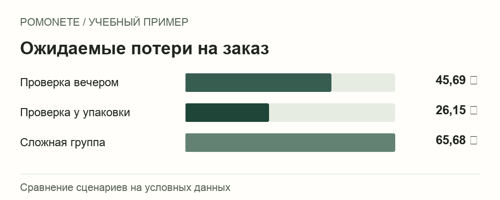

Как селлеру оценить выборочную проверку заказов перед передачей
Считаем ожидаемую стоимость ошибки на заказ по доле выявленных проблем и их последствиям.
У продавца альбомов после передачи иногда находят несоответствия вложений. Чтобы оценить одну проверку перед отправлением в доставку Яндекс Маркета, измерим потери на заказ и цену минуты контроля. Наблюдение в одной смене используется как приближение.
Как поставить замер
Решите, что считается проблемой, и возьмите сопоставимые типы заказов. Выпишите стоимость обратного процесса, лишнего труда и расходников по закрытым случаям. Если проверка нашла ошибку заранее, оцените предотвращённое последствие отдельно и не складывайте его с фактическим случаем.
Чтобы пересобрать расчёт «Ожидаемые потери на заказ» для своего магазина, перенесите в него исходные числа. В формуле A обозначает «проблемные заказы», B обозначает «проверенные заказы», C обозначает «средние затраты на проблему, ₽». Частота события умножается на последствия одного события. Так получается средний ожидаемый эффект на единицу исходной выборки. Запишите рядом период и охват каждого среза. Для оценочных строк оставьте пояснения рядом с исходными значениями. При чтении сводки будет видно, какие из них пока подтверждены.
Ожидаемые потери на заказ = A ÷ B × C
| Условие | Проблемные заказы | Проверенные заказы | Средние затраты на проблему, ₽ | Ожидаемые потери на заказ |
|---|---|---|---|---|
| Проверка вечером | 17 | 160 | 430 | 45,69 ₽ |
| Проверка у упаковки | 9 | 148 | 430 | 26,15 ₽ |
| Сложная группа | 7 | 81 | 760 | 65,68 ₽ |

В сценарии «Проверка вечером» в формулу подставляем проблемные заказы = 17, проверенные заказы = 160, средние затраты на проблему, ₽ = 430. Получается 45,69 ₽. Выборка собрана из заказов конца смены, включая разные зоны.
В сценарии «Проверка у упаковки» в формулу подставляем проблемные заказы = 9, проверенные заказы = 148, средние затраты на проблему, ₽ = 430. Получается 26,15 ₽. Классификация сохранена. Сравнивается процесс с короткой проверкой раньше.
В сценарии «Сложная группа» в формулу подставляем проблемные заказы = 7, проверенные заказы = 81, средние затраты на проблему, ₽ = 760. Получается 65,68 ₽. Мало наблюдений и более дорогие случаи. Группу держим раздельно от обычного потока.
Если «Проверка вечером» взять за исходную точку, «Проверка у упаковки» меняет показатель «ожидаемые потери на заказ» на -19,54 ₽, а «Сложная группа» на 19,99 ₽. Между двумя последними строками разница составляет 39,53 ₽ при вычитании второй из третьей. Смотрите, какой именно вход изменился между строками. Если менялись объём и условия одновременно, итог сравнения относится ко всему сочетанию.
От меньшего результата до большего в таблице 39,53 ₽. При переходе из «Проверка у упаковки» со значением 26,15 ₽ в «Сложная группа» со значением 65,68 ₽ условия заданы явно. Этот интервал описывает три построенных случая, а для вероятности исходов нужна история. В рабочей записке полезно назвать минимальное значение, при котором сохранится ваше решение. Если такой порог попадает внутрь интервала, подтвердите спорный параметр до того, как менять процесс.
Что значит выборка с большой долей дорогих
Если проверяющий вручную выбирал подозрительные заказы, доля обычно выше общей. Для оценки магазина возьмите случайную выборку. Для операционного поиска уязвимого места целевые случаи полезны, но подпишите причину отбора.
В расчёт «Проверка у упаковки» входят проблемные заказы, проверенные заказы, средние затраты на проблему, ₽. Для каждого впишите, где взять факт и с каким временным лагом он поступит. Опорой будут журнал склада и временные отметки заказов. Если один источник обновляется быстрее другого, зафиксируйте общий момент доступности. При существенном разрыве покажите последние данные отдельным оперативным значением.
Для сравнения выведите короткий журнал с временем поступления работы, началом обработки и моментом передачи. Длительность операции измеряют на нескольких сменах, чтобы короткая спокойная неделя не стала единственной нормой. Товары разных размеров и сложность сборки записывают отдельными группами. На узком участке проверьте распределение работы по часам и общую загрузку за день. Даже при одинаковом дневном итоге в очереди может остаться разное количество заказов.
Что сильнее всего меняет результат
Возьмём сценарий «Проверка у упаковки» с результатом 26,15 ₽. В нём последовательно изменим «проблемные заказы», «проверенные заказы», «средние затраты на проблему, ₽». Для каждого входа шаг близок к 10% его исходной величины, целые значения округлены. После каждого опыта возвращаем остальные числа к исходным. Так можно выяснить, какой вход уточнять первым, если перед решением мало времени.
- «Проблемные заказы» меняется с 9 на 10. При прежних остальных входах получается 29,05 ₽, сдвиг составляет 2,91 ₽.
- «Проверенные заказы» меняется с 148 на 163. При прежних остальных входах получается 23,74 ₽, сдвиг составляет -2,41 ₽.
- «Средние затраты на проблему, ₽» меняется с 430 на 473. При прежних остальных входах получается 28,76 ₽, сдвиг составляет 2,61 ₽.
При выбранных шагах параметр «проблемные заказы» дал самый крупный сдвиг величиной 2,91 ₽. Если в магазине эта величина меняется в узком диапазоне, подставьте обе его границы. Для связанных условий добавьте отдельную строку с одновременным изменением входов и поясните их связь в примечании.
У заказа из трёх позиций бывает одна ошибка и несколько исправлений. Сохраняйте обе единицы измерения. Пропуск малого расходника и неправильная модель теряют разные суммы. Если числа расходятся, расчёт по средней стоимости нуждается в уточнении.
Как решить, где оставить проверку
Сравните затраты дополнительного контроля с экономией от уменьшения проблем. При редких дорогих случаях имеет смысл оставить процедуру только на отдельной группе. Зафиксируйте сотрудника и измерьте фактическое время, пока оценка подтверждается.
Полезно раз в несколько смен собрать пакет отклонений и приложить отметки о причинах. У одного опоздания бывает несколько объяснений, и назначать его первому видимому участку рискованно. Если временный ресурс перемещали между зонами, включите в расчёт, где исчезли эти часы. После пилота проверьте верхний хвост длительности и число заказов, которые перешли за срок.
Для управленческой встречи подготовьте два небольших примера из рабочих записей. Первый сверяет «ожидаемые потери на заказ» при базовых условиях «Проверка вечером». Второй берёт изменившуюся строку и объясняет, какой источник исправлен. Селлеру Яндекс Маркета будет проще повторить расчёт на новой группе, если видны исходные значения, дата анализа и момент, когда итог станет достаточно точным для решения.